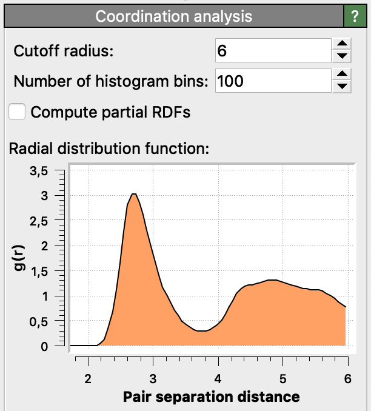
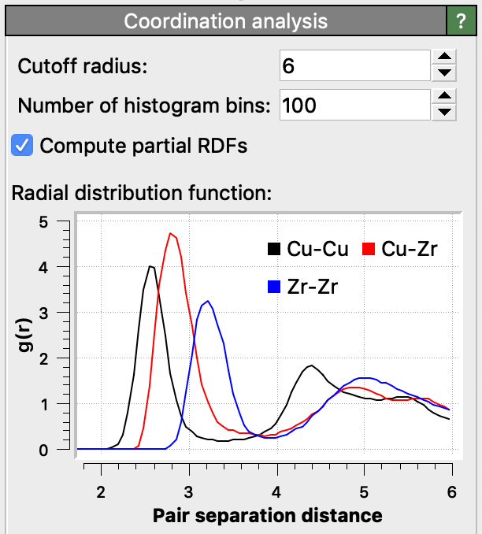

Coordination analysis
{kind=link}
This modifier computes two kinds of output:
- Coordination numbers
For each particle, it counts the number of other particles within a given cutoff distance. This neighbor count, the so-called coordination number of the particle, is stored in the
Coordinationoutput property by the modifier. The computed coordination numbers are available to subsequent modifiers in the OVITO data pipeline. For example, you could select all particles having a certain minimum number of neighbors using the Expression selection modifier or visualize the computed coordination numbers using the Color coding modifier.- Radial pair distribution function
The modifier also computes the radial pair distribution function (radial PDF, or simply RDF) for the particle system. The radial pair distribution function \(g(r)\) measures the probability of finding a particle at distance \(r\) given that there is a particle at position \(r=0\); it is essentially a histogram of pair-wise particle distances. The pair distribution function is normalized by the average number density of particles (i.e. the total number of particles divided by the simulation cell volume). See the Wikipedia article for more information on this distribution function.
Element-wise RDFs
{kind=link}
The option Compute partial RDFs lets the modifier compute separate radial distribution functions for all pair-wise combinations of particle types or chemical elements. The computed partial RDFs will be normalized such that the summation of the partial RDFs, weighted by the product of the two corresponding elemental concentrations, yields the total RDF. For example, for a binary system with two particle species \(\alpha\) and \(\beta\), the modifier computes a set of three partials functions \(g_{\alpha \alpha}\), \(g_{\alpha \beta}\) and \(g_{\beta \beta}\), which add up to the total distribution as follows:
\(g(r) = c_{\alpha}^2 g_{\alpha \alpha}(r) + 2 c_{\alpha} c_{\beta} g_{\alpha \beta}(r) + c_{\beta}^2 g_{\beta \beta}(r)\)
Here, \(c_{\alpha}\) and \(c_{\beta}\) denote the concentrations of the two species in the system and the factor 2 in the mixed term appears due to \(g_{\alpha \beta}(r)\) and \(g_{\beta \alpha}(r)\) being identical.
Only selected particles
The option Use only selected particles restricts the calculation to the currently selected particles.
This is useful if you want to calculate the RDF only for a specific part of a system. If this option is enabled, unselected particles
will be treated as if they did not exist during the calculation. Their Coordination values will be set to zero,
they will not be counted in the coordination numbers of other particles, and they are ignored in the normalization of the RDF.
Time-averaged RDF
Note that the modifier calculates the instantaneous RDF for the current simulation frame only and outputs it as a data table, which varies with simulation time. Subsequently, you can use the Time averaging modifier of OVITO to aggregate all per-frame RDFs into one mean RDF, averaging the distribution over all frames of the loaded trajectory.
Bond length distribution
Furthermore, OVITO provides another analysis tool for computing the bond length distribution specifically for bonded pairs of particles: the Bond analysis modifier. This modifier can additionally compute the distribution of bond angles formed by triplets of particles.
See also
ovito.modifiers.CoordinationAnalysisModifier (Python API)